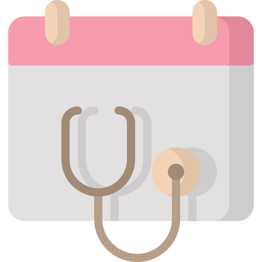

<ion-content>
  <ion-header>
    <ion-toolbar>
  
      <ion-title style="text-align: center;" >Randevularım</ion-title>
      <!-- <ion-button style="position: absolute; margin-top: -20px;" (click)="degis()" >degistir</ion-button> -->
    </ion-toolbar>
  </ion-header>


      
  <ion-refresher slot="fixed" (ionRefresh)="yenile($event)">
    <ion-refresher-content
      pullingIcon="arrow-down-outline"
      pullingText="Sayfayı yenilemek için çekin!"
      refreshingSpinner="crescent"
      refreshingText="Sayfa yenileniyor...">
    </ion-refresher-content>
  </ion-refresher>

  <ion-segment (ionChange)="switch()" value="randevular">
    <ion-segment-button style="width: 50%;" value="randevular">
      <ion-label style="text-transform: capitalize" >Randevularım</ion-label>
    </ion-segment-button>
    <ion-segment-button style="width: 50%;" value="gecmisrandevu">
      <ion-label  style="font-size:14px;text-transform: capitalize">Geçmiş Randevularım</ion-label>
    </ion-segment-button>
  </ion-segment>


 <!-- Randevular icin -->
 <span *ngIf="randevu_switch">


  <!-- Randevu yok -->
   <span *ngIf="!randevular_">

  
  <ion-label style="font-size: 25px; text-align: center; display: block;" >Randevunuz Bulunmamaktadır!</ion-label>
 
   </span>
   


<!-- Randevu var ise-->

<span  *ngIf="randevular_" >
  <ion-card *ngFor="let randevu of randevular,let i=index">
    <ion-card-content  >
      <div  class="card">
              
        <ion-title style="float: left;"  >{{randevu.TARIH}}</ion-title>
        <ion-icon  style="font-size: 26px; margin-top: 2px;margin-left: 10px; float: left;" name="time-outline">
        </ion-icon>
        <ion-title>{{randevu.SAAT}}</ion-title>
     

      <div  >
 
       
        <div style="margin-top: 2px;">

       
      
      <ion-label style="margin-top:6px;"  class="label">{{randevu.HASTANE}}</ion-label>
    </div>
    
    <div style="margin-top: 2px;">

   
      
      <ion-label  class="label">{{randevu.UNVAN}} {{randevu.DOKTOR}}</ion-label>
    </div>
    <div style="margin-top: 2px;">

 
      
      <ion-label  class="label">{{randevu.POLIKLINIK}}</ion-label>
    </div>
    </div>
    <ion-button style="float: right;" color="danger" (click)="randevu_iptal(i,randevu.TARIH,randevu.SAAT,randevu.POLIKLINIK,randevu.DOKTOR,randevu.ta)" >İptal Et</ion-button>
    </div>

    </ion-card-content>
  </ion-card>
</span>

</span>


<!-- Gecmis randevular icin -->
<span *ngIf="!randevu_switch">


<!-- Gecmis Randevu yok ise-->
   <span *ngIf="!gecmis_randevular">

    
    <ion-label style="font-size: 25px; text-align: center; display: block;" >Geçmiş randevunuz Bulunmamaktadır!</ion-label>
   
   </span>


<!-- Gecmis Randevu var ise-->
<span *ngIf="gecmis_randevular" >

  <ion-card *ngFor="let gecmis_randevu of gecmisradenvular">
    <ion-card-content  >
      <div  class="card">
              
        <ion-title style="float: left;"  >{{gecmis_randevu.TARIH}}</ion-title>
        <ion-icon class="icon"  style="font-size: 26px; margin-top: 2px;margin-left: 10px; float: left;" name="time-outline">
        </ion-icon>
        <ion-title>{{gecmis_randevu.SAAT}}</ion-title>
     

      <div >
        <div style="margin-top: 2px;" >

 
      
      <ion-label style="margin-top:6px;"  class="label">{{gecmis_randevu.HASTANE}}</ion-label>
    </div>
    <div style="margin-top: 2px;">

  

      
      <ion-label  class="label">{{gecmis_randevu.UNVAN}} {{gecmis_randevu.DOKTOR}}</ion-label>
    </div>
      <div style="margin-top: 2px;">

     
      
      <ion-label  class="label">{{gecmis_randevu.POLIKLINIK}}</ion-label>
    </div>
    <!-- {{gecmis_randevu.DURUM}} -->
    <div *ngIf="gecmis_randevu.DURUM=='IPTAL'">
    <ion-label style="color:red;" >*İptal edildi</ion-label>
    </div>
    </div>
    </div>

    </ion-card-content>
  </ion-card>
</span>
  
</span>


</ion-content>
